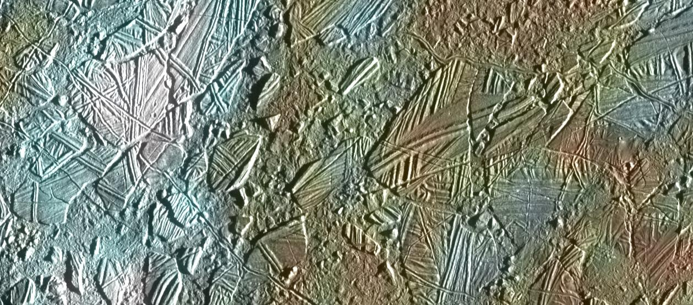
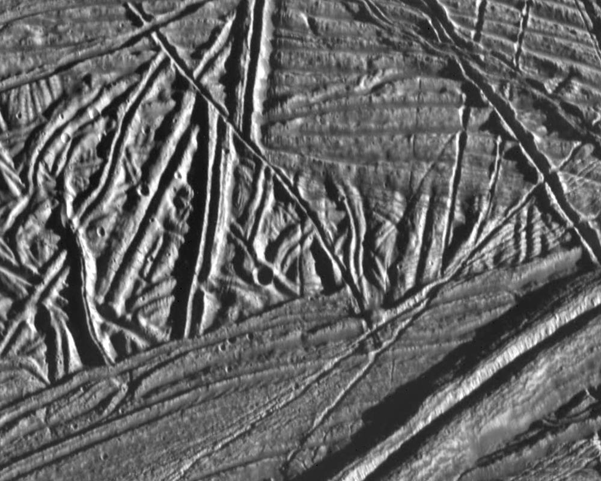
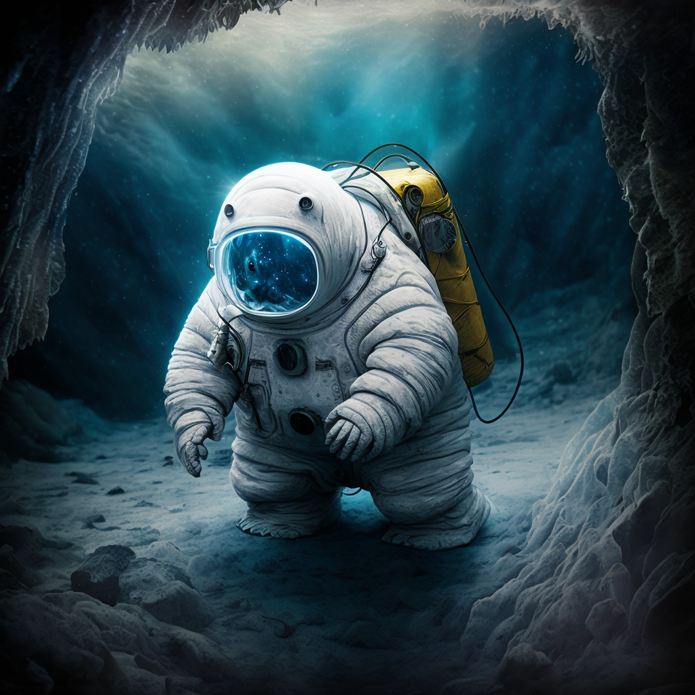

In the twilight of a distant cosmic age, a Tardigrade cosmic gardener embarks on an interstellar quest to Europa, one of the gas giant Jupiter's many enigmatic moons. A celestial gem entombed in a cloak of water ice, this distant celestial body resides almost 400 million miles from the nearest bastion of known life. Beneath its icy shell hides a subsurface ocean boasting more than twice the amount of water found on Earth. Tidal forces from Jupiter's gravity keep these oceans in the 0 to –4 °C range, a stark contrast to the moon's chilling surface of -143°C. High pressure and salinity account for variation in temperature, a potential avenue of inquiry for psychrophilic (cold-loving) halophiles (salt lovers). Candidate microbes for establishing the area may be Antarctican Halomonas sp. ANT-3B, a bacterium found in sea ice, and Halorubrum lacusprofundi, an archaeon from the hypersaline Deep Lake. These organisms are optimal contenders not because they can withstand extremities but because they thrive in them. For example, Halorubrum lacusprofundi evolved unique lipid structures to its outer membrane and produces solutes that balance osmotic pressure; without the imposition of high salt concentrations, the cells become stressed, and their membranes rupture (causing cell death)—Halomonas sp. ANT-3B hosts cold-adapted enzymes that drive metabolic reactions within the cell, and exposure to temperate conditions causes protein unfolding and inevitable cell death.
Europa - Ice Rafting View, source: NASA/JPL/University of Arizona
Chaos terrain and ridged plains are other types of Europan landscapes, each region offering a haven amidst hostilities. Chaos terrains are jumbled, fractured crust segments formed through billions of years of geological activity. As Jupiter's tidal forces flexed and deformed Europa's crust, melting and refreezing the moon, ice canyons and caverns have likely formed. The sublime scenery exhibits gentle, shimmering rainbows amid the weak light. Although a day here lasts 85 hours, sheer distance from the Sun makes Europa 25 times dimmer than Earth.
Conversely, ridged plains are flat zones characterized by a series of ridges and troughs that crisscross the landscape, perhaps due to cryovolcanism. These rolling hills are arranged in complex, interconnected patterns several kilometers high and wide. In either of these provinces, frigid temperatures, high radiation, and a tenuous atmosphere are significant barriers to initiating some semblance of an ecosystem. The most qualified organisms must be psychrophilic and radiotolerant. For instance, Deinococcus radiodurans can survive 15,000 Gy doses of radiation by segmenting and repairing its DNA to high precision. Even more incredibly, Rubrobacter radiotolerans, a bacterium found in soil samples near the damaged Chornobyl nuclear reactor, can survive doses of ionizing radiation up to 30,000 Gy.
Ridges and Fractures on Europa, source: NASA/JPL/ASU
By exploring the wide range of environmental conditions that may harbor life, and the impervious qualities of highly resilient organisms, we broaden our perspective on what constitutes a habitable environment. In doing so, we open the door to new discoveries, unlocking the secrets of what may become a cosmic garden that lies hidden among the stars
A Cosmic Gardner exploring hidden ocean of Europa, source: MidJourneyAI